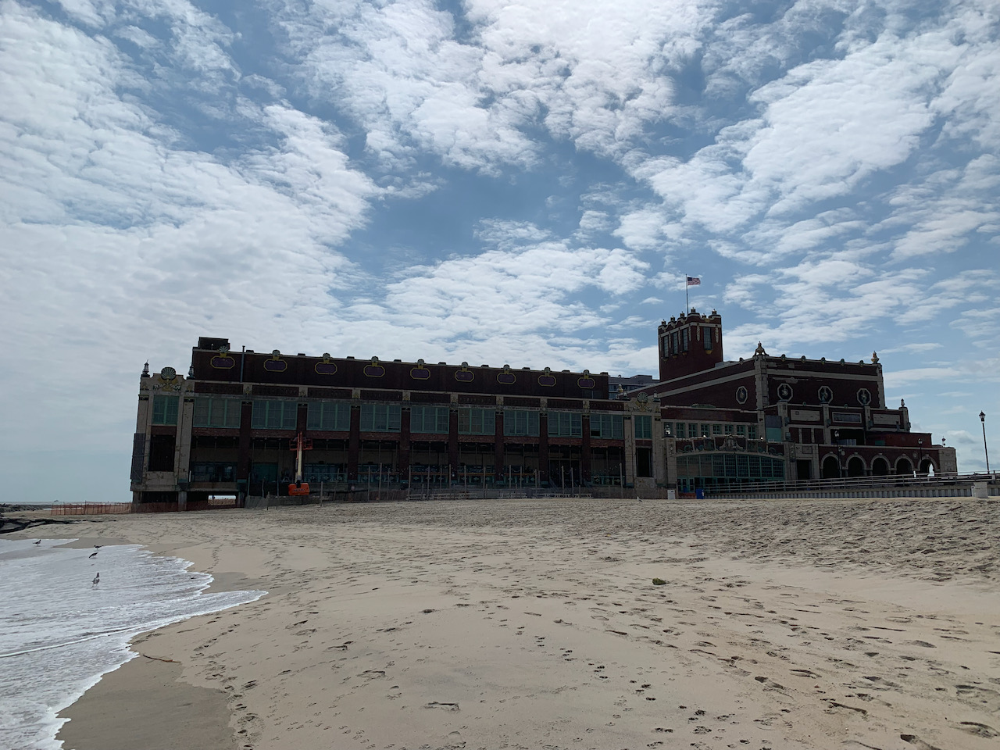
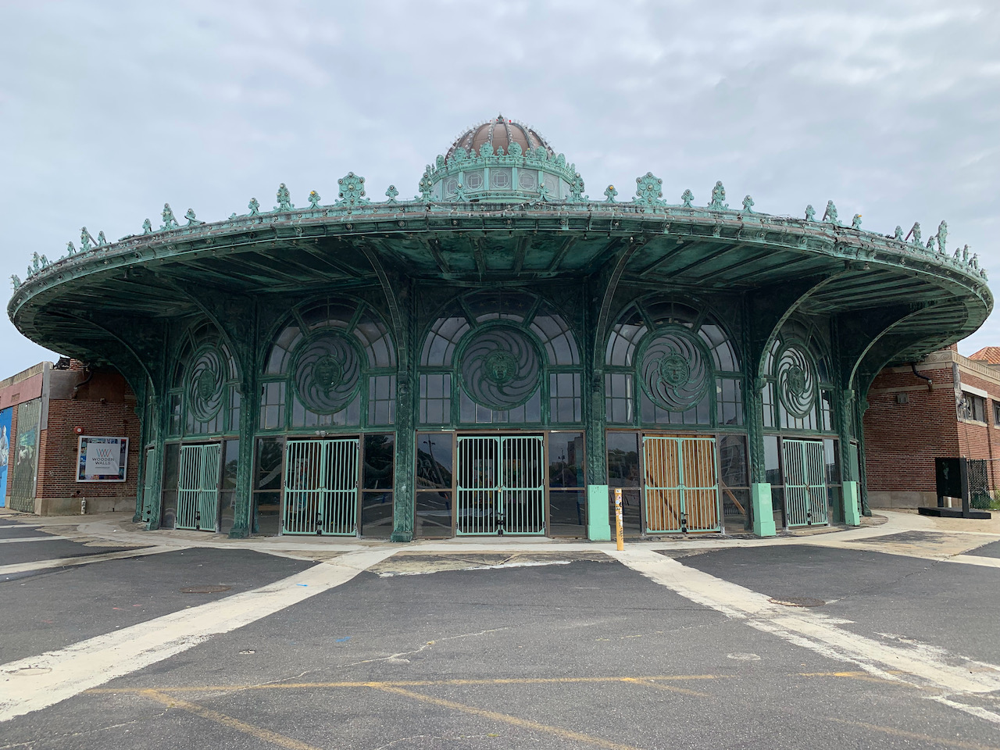
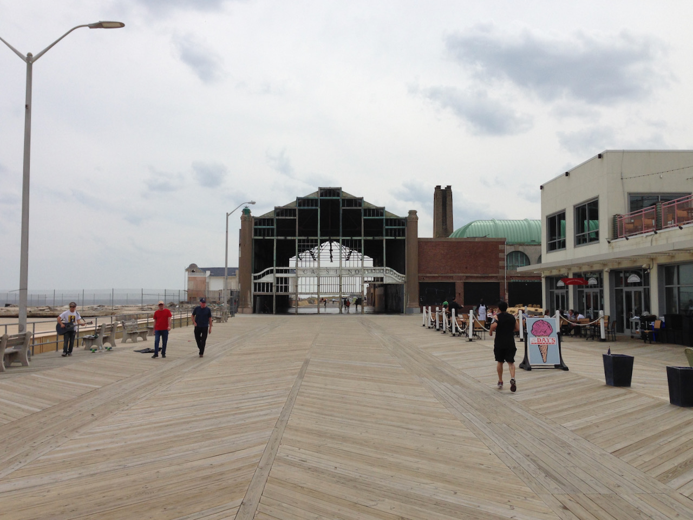

There are old historic buildings on the Asbury Park boardwalk. Pictured below are a some of them.



Use these links to find out more about the history of these buildings and plans for the future.